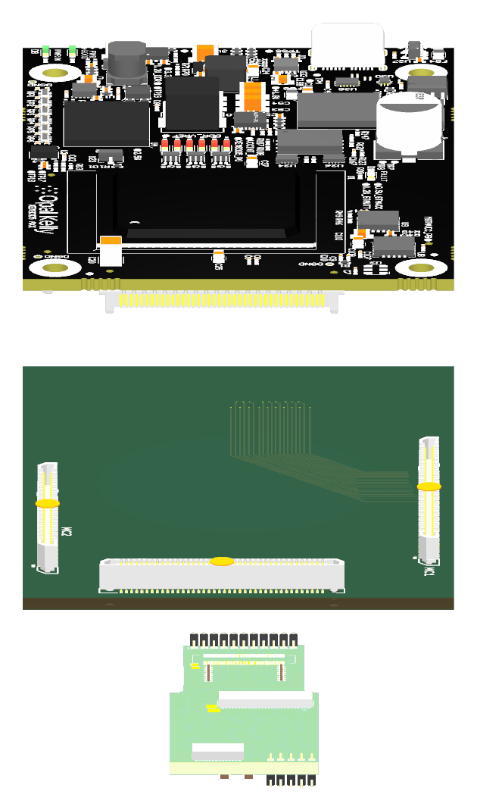
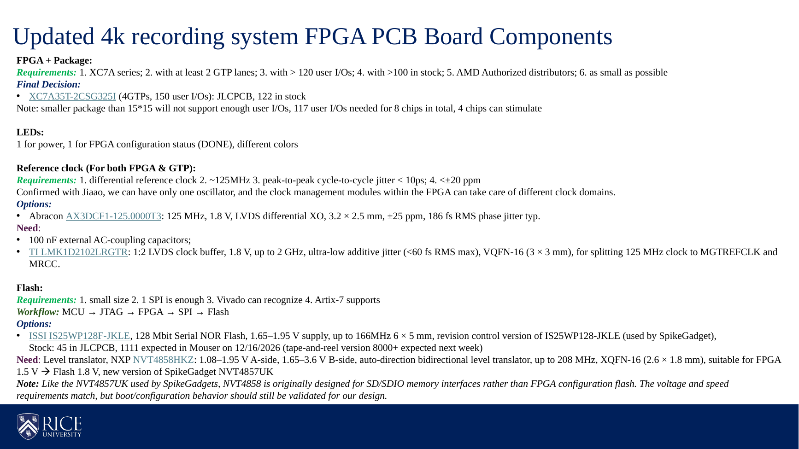

XEM8305Carrier boardCurrent LDOOpen 3D to rotate the native model.
Open 3D to rotate the LDO source.
Native LDO design with generic source-model bodies. Hirose J1/J19 housings are absent and fitted population is unverified.

Original proposal preserved. The slides follow Zitong’s original component order. Implementation differences and technical checks are in the speaker notes and review file.
Preserved R39 FPGA review · Preserved complete R3 carrier · Project library